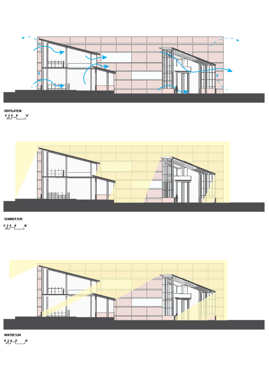

Library Explorations
Community Library through Sustainability in South Charlotte
Laudeman, Sara M
ARCH 3102 - DB | Spring 2017 | University of North Carolina at Charlotte
This project pulls the first two full years of undergraduate education into a comprehensive design scheme. The program is a small public library in southern Charlotte, NC. It is split between auxiliary spaces to the south and library stack spaces to the north. This allows large view windows to the north and controlled southern light. The two programs are organized along a datum wall, which shields from eastern sun and provides circulation between the two wings.

In plan, the different spaces within the project are highlighted. In the north, the main circulation of the library can make use of abundant indirect sunlight (Special collections and reading area, 1; general collection and reading area, 12-14). A large, covered patio (15) spills out into the public courtyard, which is a flexible space during favorable weather. The large datum wall that serves to connect the two wings can serve as a projection screen for movie showings in the evenings. In the south wing, staff spaces (workroom, 7; meeting room, 8; restroom, 9) occupy the second floor. The ground floor offers public restrooms (20, 21) as well as a community multipurpose meeting space (19). The lobby entrance is a double-height space that welcomes visitors in, with an exterior book return available.
The library offers community spaces which can be accessed 24/7 by the neighborhood. These spaces include a meeting space, restrooms, and the lobby entrance. During business hours, the second floor of the south wing is open to staff, and the two floors of stacks in the northern wing are open to the community. The large courtyard can be accessed by visitors during business hours, offering an outdoor space for social interaction and community engagement. The first floor reading areas might be host to small events, such as childrens' storytimes, and the community meeting rooms can be rented out for private events, used as a polling location for elections, or opened for public workshops.

At the detail level, the neighborhood vernacular of brick is pulled into the site by use of a similarly-toned terracotta finish. View glass is accented with glass bricks to allow daylight through the facade and provide recessed coves for electric lighting. The combination of materials provides the structure with a textured exterior appearance and a series of low-profile articulations on the interior, which serve to accentuate the length of the datum structure.
Daylighting plays an enormous role in the design of pleasant space. The primary goals in this project were to bring northern light into the stacks spaces and shield the courtyard side of the wing from harsh summer sun. Charlotte, NC benefits from the winter sun being allowed to penetrate the building mass. These sections illustrate some of the design decisions made to privilege daylight. The collection wing uses a clerestory to admit winter light and allow ventilation on both floors. The clerestory also allows winter sun to penetrate to the deepest part of the wing. On the administrative side, the same schemes (less the clerestory) are applied to accomplish similar results. The bulk of the south wing provides shading in the courtyard in the summer, but an unfortunately high amount of shading in the courtyard during the winter months.
To develop the form for daylighting, a series of iterative designs were tested in a skybox with physical models. These tests were then refined digitally using Ladybug Radiance renderings for perceived glare and illuminance. The primary design schemes for daylighting include large spanning view glass to the north, smaller windows with deep overhangs to the south, and the vertical datum wall to shelter the mass of the project from early-morning easter glare. Pictured below is the final scheme rendered to show illuminance at nine points throughout the year.